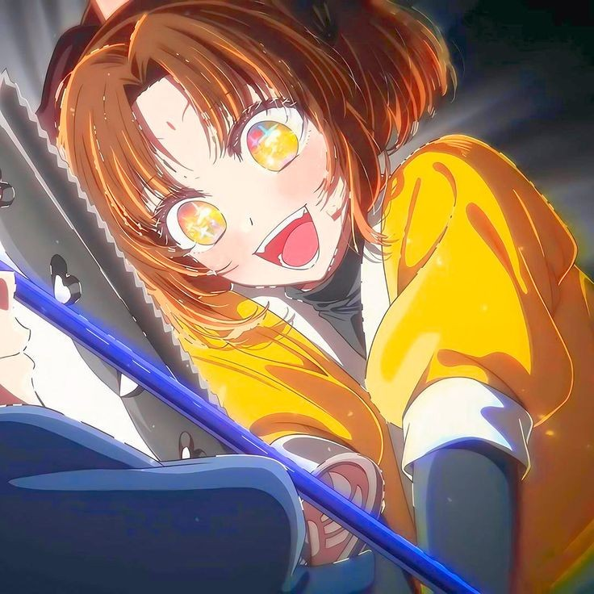

角色簡介
有馬佳奈(Arima Kana)（日語：有馬（ありま）かな）。是由赤坂明創作、橫槍萌果作畫的漫畫《【我推的孩子】》的登場角色。女演員。偶像團體B小町的C位擔當。現已從偶像畢業。童星出身，小時候被譽為「能10秒落淚的天才童星」（10秒で泣ける天才子役）因為日語發音關係也被稱作「能舔小蘇打的天才童星」（重曹を舐める天才子役）。
佳奈的個人檔案
- 本名：有馬(ありま) かな(Arima Kana)
- 別號：帽皇、蘿莉學姐、舔小蘇打的天才童星
- 職業：演員、偶像
- 髮色：酒紅髮
- 瞳色：酒紅瞳
- 身高：150cm
- 萌點：妹妹頭、貝雷帽、白色及膝襪、美少女、天才、毒舌、傲嬌、演員、學姐、蘿莉體型、偶像、純情、可愛
- 經紀公司：莓Production
- 所屬團體：B小町
- 應援色：白
- 形象設計：在漫畫的分鏡階段，由於在原作者赤坂明發來的圖片中頭上有著圓圓的東西，所以負責作畫的橫槍萌果便為佳奈畫上了貝雷帽。
- 輝煌歷史(黑歷史)：曾經以《大青椒體操》拿下Oricon榜首、在音樂節目裡出場個沒完，不過卻微妙地走了音。
- 最喜歡的食物：肉
- 討厭的食物：青椒，但沒有公開說過。在拍攝《大青椒體操》時是拼了命才吃下去青椒的，現在光是看著青椒就會犯蕁麻疹。
- 經濟狀況：住在高級公寓裡，有理財，不過花錢也大手大腳。
- 其他：平常有在做些跑步之類的健身運動。理解能力強，就算一邊唱著歌，舞蹈動作也沒有明顯失誤。會讀漢字。唱功很好，在《大青椒體操》之後也出過不少曲子，且唱得越來越好。
佳奈的經歷
序章
從小就被看做頗具演繹才能的少女，佳奈童星時代曾高傲自信，但由於轉型困難，一度接不到工作。在阿奎亞的幫助下，她重新找回信心，加入新生「B小町」，並開始新的偶像生涯。

- 序章：從小就被看做頗具演繹才能的少女，長期處於受到追捧的環境的佳奈不覺間飄飄然起來，很是自信自負。在童星時代與阿奎亞初次共演時，因為自以為傲的演技阿奎亞超越，自此對他變得十分在意。由於童星時期過分高傲，童星的人氣過去後，慢慢地便鮮有劇組邀請她參加演藝工作，童星轉型之路困難重重，佳奈漸漸淪為了過氣童星，長期接不到有分量的工作，一度沒有所屬的經紀公司。但最終憑藉著五反田導演的告誡變得稍加圓滑，得以在業界殘留下來而非淘汰掉。好不容易接到出演女主角的工作，可惜出演作品是顏控導演只為捧紅小鮮肉模特趕鴨子上架的完結漫畫改編網絡電視劇《今天甜》。與演技稀爛的模特演感情戲，已經學會配合他人的佳奈只能選擇降低自身水準來演戲。偶遇阿奎亞並得知對方也仍留在演藝圈後很是高興，向阿奎亞提出演出邀約扮演跟蹤狂。在阿奎亞的安排下，佳奈展現出原本的實力並頗受好評，佳奈從此對阿奎亞產生了好感。後在阿奎亞的說動下加入草莓娛樂，成為了新生「B小町」的初始成員。由於眼見阿奎亞在參加戀愛真人秀時，與黑川茜的關係越發親密，二人更在節目中接吻，因此一度不想和阿奎亞見面。在MEM CYO加入新生B小町後，本來對自己成為C位沒信心，後來由於露比和MEM CYO的歌唱能力不及於她，因此當上團隊C位。並被阿奎亞假扮的皮耶勇酷雞進行訓練，訓練過程中與皮耶勇酷雞聊天時發現他對自己的興趣喜好瞭如指掌，後來在夜晚的休息期間，卻碰巧發現到此時的皮耶勇酷雞正是阿奎亞本人。首次登台時，原本毫無自信，見到在台下為新生B小町應援的阿奎亞，一掃陰霾發誓自己要成為「你推的孩子」而煥發出光芒，不僅順利完成表演，收割一眾粉絲，更是解開了自卑的心結。之後得知阿奎亞和黑川茜的關係僅止於工作後而重修舊好。
- 舞台劇篇：公演上台前對黑川茜表示演技上的認同與自己的取勝欲「我要在這裡贏過你，再也不讓任何人管我叫什麼前天才童星！」。公演中，另一演員鴨志田朔夜說台詞時恰好撞上播放效果音，佳奈通過臨場發揮輕鬆化解，讓朔夜感慨佳奈「在配合方面上簡直是壓倒性的」。在與黑川茜的對手戲中見證了其演技大爆發，本想以演技回應時，回想起自己以前因為不顧及旁人感受的演技而漸漸失去他人關注的過去，眼神黯淡地選擇消除自己存在感去襯托黑川茜。 隨後在與阿奎亞的對手戲中，被阿奎亞的臨場發揮喚回精神，在他的暗示下，佳奈回憶並正視了過去並找回自信，喚起了屬於她「像耀眼的太陽」般的巨星的演技，完美演出了劍儀這個角色。並以此演技向阿奎亞表達了「更加注視我」的意願。公演謝幕後 ，認為自己算不上天才，黑川茜的表現才是真正的才華。與此同時黑川恰感慨她還差得遠，姬川、佳奈才是真正的天才。
- 拍攝MV：為拍攝B小町新的MV，B小町三人要去宮崎，順便來個「東刃BLADE」公演結束後的慰勞旅行。阿奎亞沒有行李箱，佳奈就約阿奎亞一起去買，花了好多時間打扮。約會期間，阿奎亞付款、拎包、預約餐廳等等太過熟練，讓佳奈難以自持。因為MV拍攝過程中的積極展現而得到了視頻製作者Anemone「很可愛」的評價。黑川茜成為電影主演的同時，阿奎亞也向佳奈表明了自己和赤音的戀愛關係，後者不由黯然落淚。升上高中三年級後，由於阿奎亞選擇和黑川茜正式交往的關係，而變得消極。
- 醜聞篇：由於黑川茜向阿奎亞提出「加奈作為偶像，不能被發現和男人有私下接觸」，阿奎亞很長一段時間沒有和佳奈進行任何交流，而佳奈對於阿奎亞的態度難受不已。當阿奎亞得知復仇其實沒有結束後，在雨中坐在公園長椅上瀕臨崩潰，路過的佳奈本想上前詢問卻被阿奎亞下意識推倒坐在地上。導致佳奈誤以為被阿奎亞討厭。有天，在飯店接受導演的赴約，卻發生意外被記者偷拍下而即將引發緋聞事件，經過不久，由於阿奎亞向新聞記者透露和露比的母親是愛後，自身的緋聞事件就沒有被爆出來。佳奈知道之後與阿奎亞和好。經過緋聞事件，正視自己的意願發現自己還是想當演員，而決定在高中畢業後從偶像畢業，重新專注在演員事業上。
- 電影篇：佳奈透過自己的社群媒體帳號正式宣布了自己將要從B小町畢業的事，公告中也稱希望走上演員的道路。在與阿奎亞吃麵時，佳奈向阿奎亞表示了自己對於他邀請自己成為偶像一事的謝意。佳奈向阿奎亞詢問自己在電影中將飾演的B小町（舊）成員設定上與星野愛關係不和，對於自己說出侮辱性台詞是否沒關係後，阿奎亞告知佳奈她對自己而言是特別的，使得佳奈害羞地找了個藉口離開了現場。在電影中扮演愛的前隊友妮諾，一個對愛持有偏執的嫉恨與信仰的扭曲粉絲，曾對愛直言自己對她的嫉妒並傷害了她。佳奈在和妮諾本人交談後，起初對妮諾的極端性格感到恐懼，但代入新B小町中所有光芒都聚焦在露比而非她的身上，也有些理解妮諾的感受。為了讓露比更好地理解星野愛，下定了決心，對露比說出了自己本想帶到墳墓里的秘密——對露比的嫉妒，希望這樣能夠讓露比明白愛當年被隊友嫉妒、孤立並傷害的心境。由此，佳奈也與重要的朋友露比決裂。在後來的拍攝中，露比即興表演了愛在被朋友直接表明討厭後做的事情。在結束拍攝後，佳奈遇到了在外面等著的露比，露比告訴佳奈她會走出自己的道路，而佳奈也跟她緩解了關係。在阿奎亞拍完姬川夫婦殉情的戲後，佳奈鼓舞了心情低落的阿庫亞，還跟阿奎亞約好讓他不要去尋死。在殺青後，佳奈一行人去了海邊。當晚，佳奈還請茜去跟阿奎亞複合。在被茜指出自己只不過是在逃避告白後，佳奈逃離了現場，但茜在第二天還是找上門來並鼓勵佳奈去告白。在茜離開後，佳奈給阿奎亞發了周六是否有空的消息。在收到邀約後，阿奎亞跟佳奈一起出門了。在兩人的制服約會中，佳奈表示希望阿奎亞能只看著她。
- 終章：大結局，B小町站上了舞台，這也是佳奈的畢業舞台。表演時佳奈一直在尋找阿奎亞的身影卻沒找到。最後等到的是一具冰冷的屍體。在阿奎亞的葬禮上，佳奈賞了沒有遵守約定阿奎亞一巴掌，並說出了來不及告訴阿奎亞的心意。後來重新振作並從B小町畢業，以演員的身分繼續在演藝圈活動。

B小町歌曲
POP IN 2
STAR☆T☆RAIN from 苺プロダクション☆ファン感謝祭
我ら完全無敵のアイドル!!